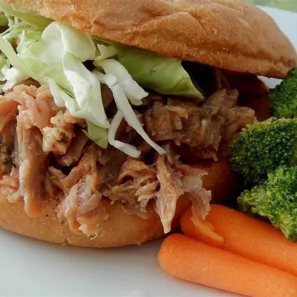

North Carolina Pulled Pork

Description
Easy to made Pork from North Carolina. Very easy to make which makes this foolproof for beginners
Ingredients
- 2 pounds pork
- salt and ground black pepper to taste
- 1/2 cup ketchup
- 1/2 cup brown sugar
- 1/2 cup red wine vinegar
Directions
- Preheat slow cooker on Low for 15 minutes
- Season pork shoulder with salt and pepper; place pork in preheated slow cooker
- Mix ketchup, brown sugar, and vinegar in a bowl; pour over pork
- Cook on Low for 8 hours
- Transfer pork to a large platter and slice into 3 to 4 pieces
- Shred meat with 2 forks and return to slow cooker
- Continue to cook for 1 hour
- Ready to serve!
Index